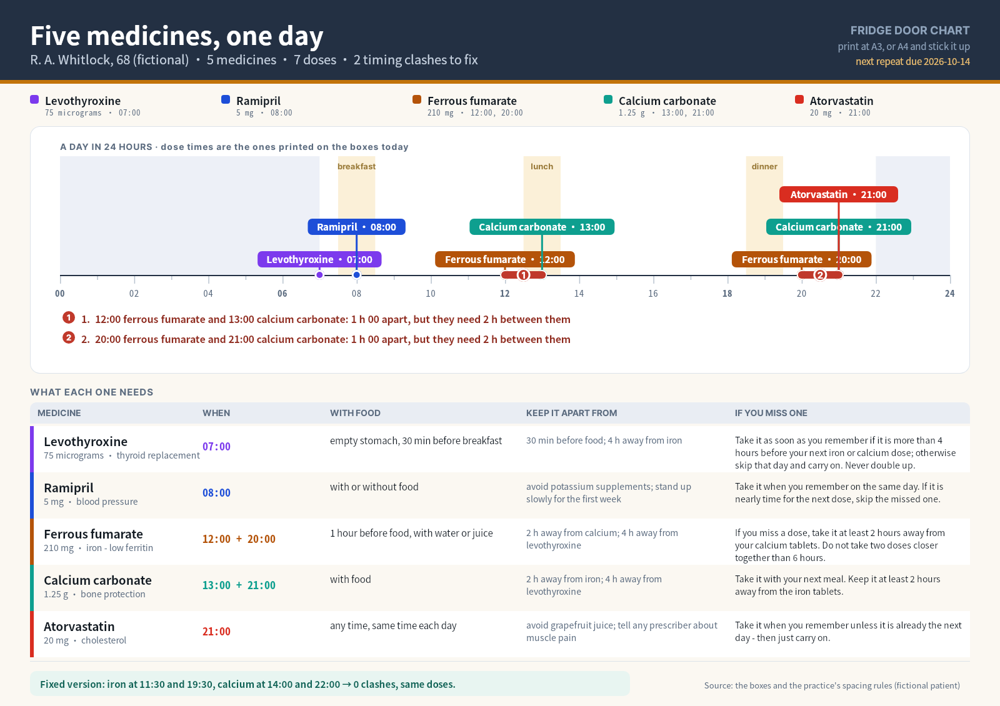
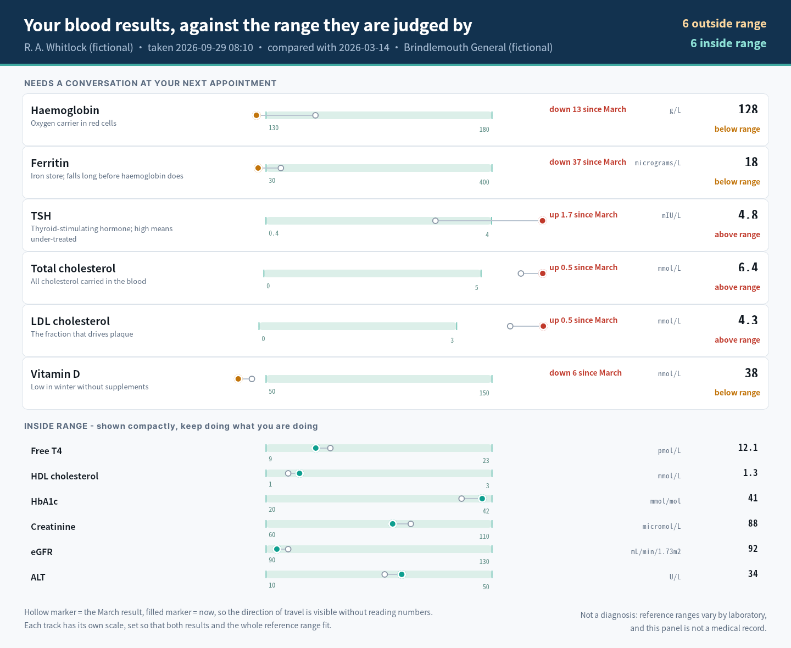
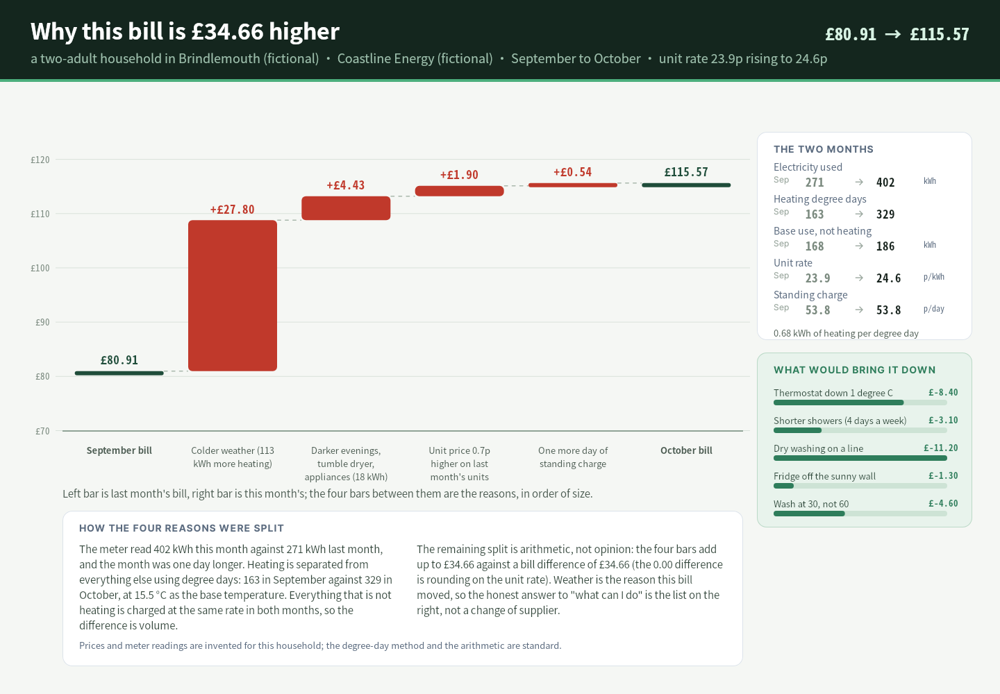
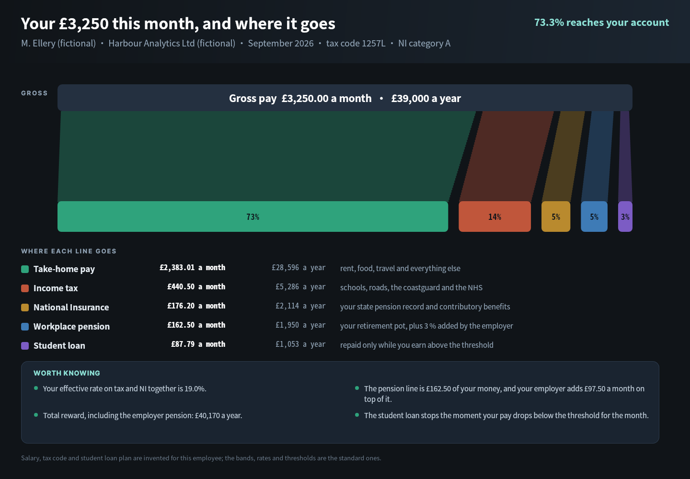
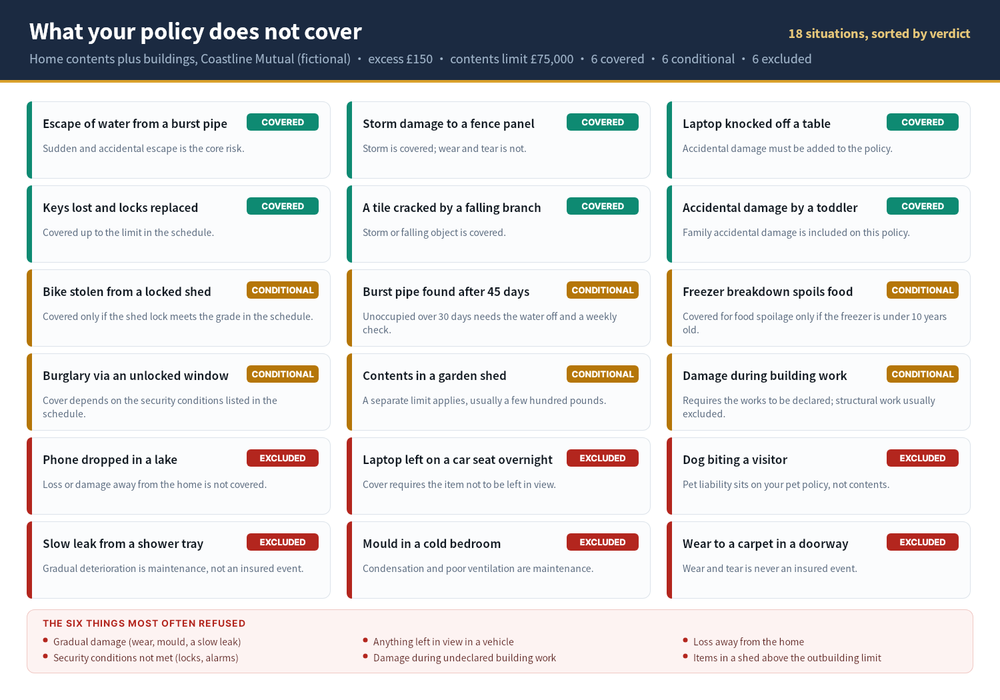
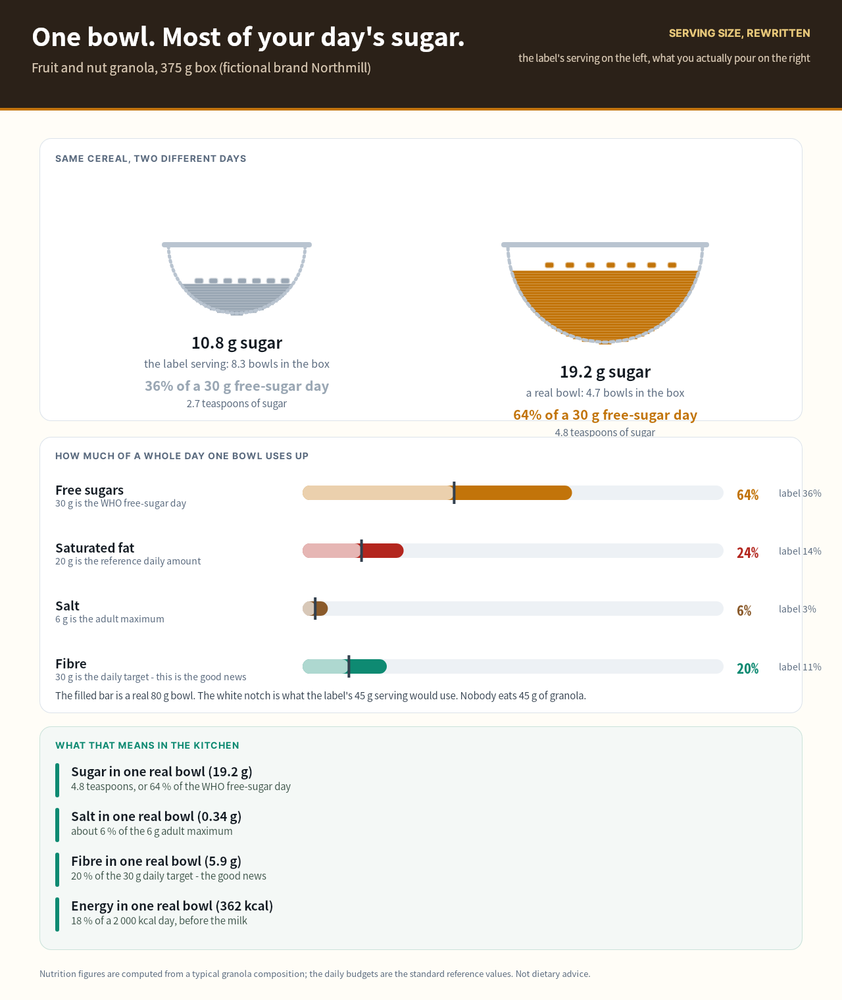
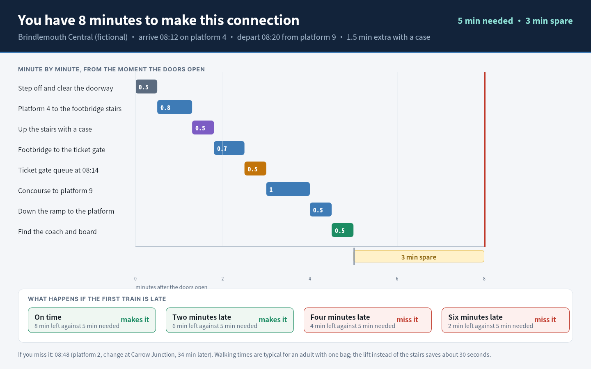
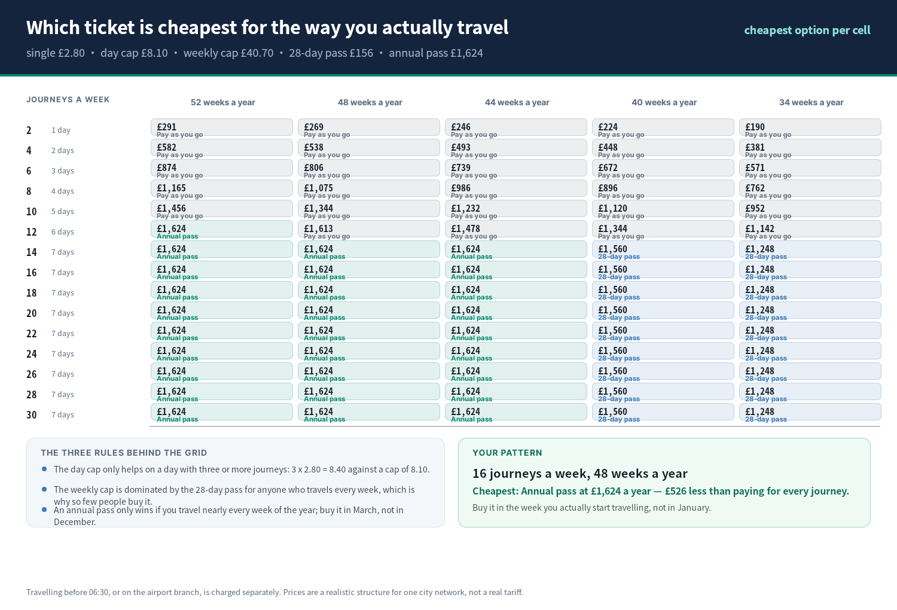
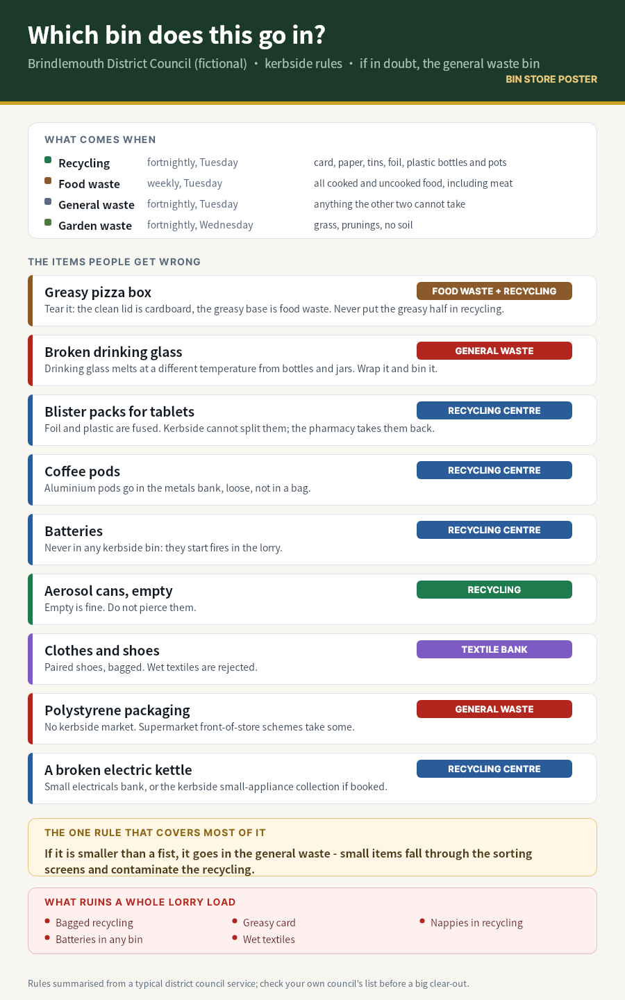
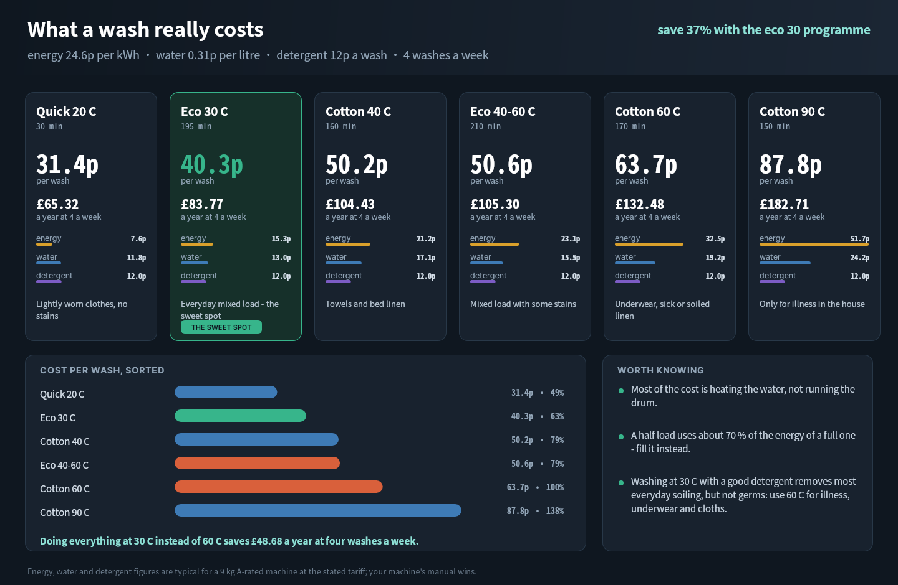

How to read this gallery
Click any image for the full-size PNG. Each piece is a standalone artefact for one problem and its own reading situation; there is deliberately no shared template. Nothing here requires a local server or a remote script.


1. Five medicines, one day
The problem: Five prescriptions, seven doses a day, and rules that only exist on the boxes: levothyroxine needs an empty stomach and four hours from iron and calcium, iron and calcium need two hours between them, and two of the doses clash.
Who and where: A 68-year-old taking five medicines, and the adult daughter who does the repeats — Printed at A3 and stuck on the fridge door; also read on a phone at the pharmacy
What they finish: Run the day without a timing clash, and know what to do about a missed dose
Visual idea: A 24-hour band with every dose on a spoke, the clashes bracketed in red, and a table that turns each box's small print into one line


2. Your blood results, in range
The problem: A printout of twelve numbers with a reference range in brackets. Nobody can tell which ones matter, which way they moved, or by how much.
Who and where: The same patient, the evening the results arrive, before the GP appointment — Desktop or tablet at home, then printed and taken to the appointment
What they finish: Know which results need a conversation, and which way each one is moving
Visual idea: Reference ranges as horizontal tracks: the band is the range, a hollow marker is the last result, a filled marker is now, so direction of travel is visible without numbers


3. Why this bill is £34.66 higher
The problem: An electricity bill that jumped a third in a month, with no explanation beyond a kWh figure and a colder October.
Who and where: A two-adult household on a variable tariff — Desktop, the evening the bill lands, with the previous bill to hand
What they finish: See how much of the increase is weather, how much is price, and what would actually reduce it
Visual idea: A waterfall from last month's bill to this month's, with degree days named as the cause and a ranked list of what would bring it down


4. Your pay, and where it goes
The problem: A payslip lists deductions in an order that hides the proportions: the biggest number on the page is not the one that reaches the bank.
Who and where: Anyone on PAYE who has never checked what the deductions buy — Desktop at home, once a year, usually in January
What they finish: See the split between take-home, tax, NI, pension and loan, and what each buys
Visual idea: A flow: one gross bar splitting into five destination bars through translucent ribbons, with the percentage inside each destination


5. What your policy does not cover
The problem: Home insurance is sold on what it covers and claimed against on what it excludes; the exclusions are spread through 40 pages.
Who and where: A householder deciding whether to claim, or whether to add accidental damage — Desktop, after something has gone wrong, in a hurry
What they finish: Find the verdict for a specific situation in seconds, and see the six refusals that cause most disputes
Visual idea: Eighteen real situations sorted by verdict, colour-coded, each with the reason in one line, and the six common refusals called out


6. One bowl, most of your day's sugar
The problem: A cereal box calls 45 g a serving and prints percentages against it. A real bowl is 80 g, and the sugar goes from a third of a day to two thirds.
Who and where: A parent buying granola, reading the label in the shop or the kitchen — A3 or A4 poster in the kitchen; also readable on a phone at the shelf
What they finish: See what one real bowl costs against a whole day's sugar, fat, salt and fibre
Visual idea: Two bowls drawn to the portion, not a table: the label bowl is nearly empty and the real bowl is nearly full, then four day-budget bars with the label notch


7. You have eight minutes
The problem: A tight connection is decided by walking distances, stairs and a ticket-gate queue, none of which appear on the ticket.
Who and where: A traveller with one bag, changing trains at a big station — Phone on the platform, between the doors opening and the next departure
What they finish: Know whether the connection is comfortable, tight or already lost, and what happens if the first train is late
Visual idea: A time budget built from eight real legs against an eight-minute axis, with the slack shown as a block and the delay scenarios below


8. Which ticket is cheapest for the way you travel
The problem: Five ticket types, four caps and a pass, and no way to tell which one is cheaper for a pattern that is not the one in the advert.
Who and where: A commuter deciding between paying as they go and buying a pass — Desktop, at the kitchen table, once a year (or after a fare rise)
What they finish: Find the cheapest option for a stated number of journeys a week and weeks a year
Visual idea: A cost surface rather than a price list: journeys a week down, weeks a year across, and the cheapest option printed in every cell


9. Which bin does this go in?
The problem: Kerbside rules are published as a list of materials, but the decisions people actually face are objects: a greasy pizza box, a broken glass, a kettle.
Who and where: Residents at the bin store, and anyone doing a clear-out — A3 poster screwed to the bin-store wall, read standing up with a bag in one hand
What they finish: Decide the bin for nine awkward items, and know the one rule that covers most of the rest
Visual idea: Object-first cards with the verdict as a coloured chip, the reason underneath, and a small contamination panel


10. What a wash really costs
The problem: Washing machine programmes are labelled by temperature and time, not by cost, and the difference between 30 and 60 is nearly half the running cost.
Who and where: A household running four washes a week — Desktop or tablet, read once when the machine is next to be replaced
What they finish: Pick the programme that is cheap enough without leaving clothes unhygienic
Visual idea: Six programme cards with cost per wash and per year, a sorted cost chart, and a note on what each temperature actually removes